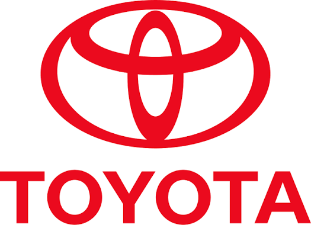
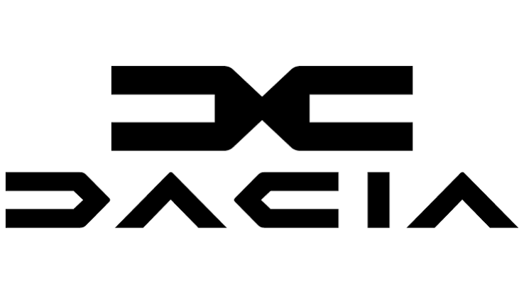
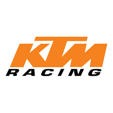

Заводські гіганти
Провідні команди


Toyota Gazoo Racing
Домінуюча команда сучасної ери WEC та багаторазовий переможець Дакара і WRC.
2015Заснування
5×Ле-МанТитули



Dacia Sandriders
Новий заводський проєкт Dacia на Дакарі, що одразу здобув перемогу з Насером Аль-Аттією.
2024Заснування
Переможець Dakar 2026 (авто)Титули


KTM Factory Racing
Австрійський виробник, що успішно виступає і в ралі-рейдах, і в MotoGP.
1992Заснування
Домінуюча сила Дакара та MotoGPТитули

X-raid Team
Приватна команда, що зробила MINI John Cooper Works одним з найуспішніших авто в історії Дакара.
2002Заснування
Багаторазовий переможець Дакара з MINIТитули